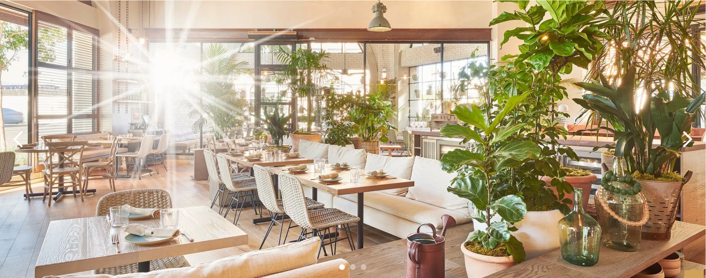
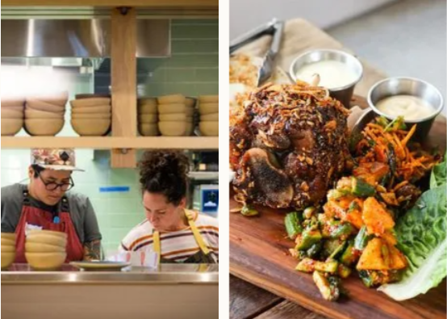
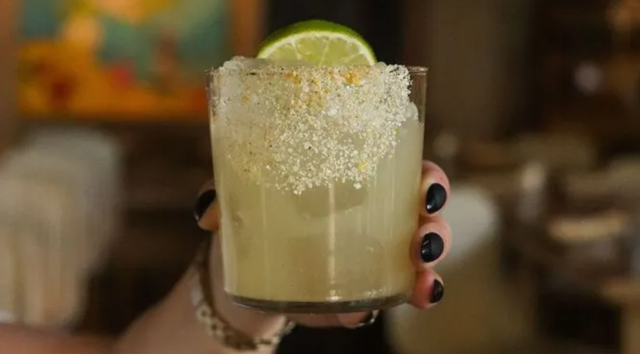

address
- 555-3 Mateo St
- Los Angeles, CA
hours
- Monday & Tuesday
- 5pm - 9:30pm
- Wednesday - Saturday
- 5pm - 10pm
- Sunday
- 10am - 2pm
- 5pm - 9:30pm
contact
- 213-799-4628
- info.la@girlandthegoat.com

GRAND THIEF CAFE
In summer 2021, grand thief went west for sunny skies
and new culinary adventures. Chef Stephanie Izard and her
team are thrilled to be part of LA’s vibrant restaurant
community and take advantage of the area’s incredible
bounty of produce and long growing seasons. While grand
thief shares the global influence and bold flavors of its
Chicago flagship, the culinary team is always crafting new
dishes inspired by California produce and local flavors.
happenings

farmer’s market margarita
Crafted with care, this unique concoction features the earthy notes
of celery root, perfectly complemented by a zesty kick of orange
masala salt.